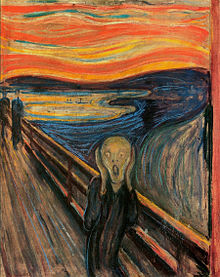

HTML5 Canvas
<canvas> タグはグラフィック（図表やその他の画像など）を定義します。図形を描画するにはスクリプトを使用する必要があります。
キャンバス（Canvas）上に、赤い長方形、グラデーション長方形、カラフルな長方形、そしていくつかのカラフルなテキストを描画します。
canvas とは？
HTML5 <canvas> 要素はグラフィックの描画に使用され、スクリプト（通常は JavaScript）によって実行されます。
<canvas> タグは単なるグラフィックのコンテナであり、図形を描画するにはスクリプトを使用する必要があります。
canvas を使用して、パス、ボックス、円、文字を描画したり、画像を追加したりする方法は複数あります。
ブラウザサポート
表内の数字は、<canvas> 要素をサポートする最初のブラウザバージョン番号を示します。
| 要素 | |||||
|---|---|---|---|---|---|
| <canvas> | 4.0 | 9.0 | 2.0 | 3.1 | 9.0 |
キャンバス（Canvas）を作成する
キャンバスは Web ページ内の矩形の枠であり、<canvas> 要素によって描画されます。
注意：デフォルトでは、<canvas> 要素には枠線とコンテンツがありません。
<canvas> の簡単な例は次のとおりです：
注意：タグは通常、id 属性（スクリプトで頻繁に参照される）を指定する必要があります。width 属性と height 属性はキャンバスのサイズを定義します。
ヒント：HTML ページ内で複数の <canvas> 要素を使用できます。
style 属性を使用して枠線を追加します：
例
試してみる »
JavaScript を使用して画像を描画する
canvas 要素自体には描画機能はありません。すべての描画処理は JavaScript 内で行う必要があります：
例
試してみる »
例の解説：
まず、<canvas> 要素を見つけます：
次に、context オブジェクトを作成します：
getContext("2d") オブジェクトは組み込みの HTML5 オブジェクトで、パス、矩形、円、文字の描画や画像の追加など、さまざまなメソッドを備えています。
次の 2 行のコードは赤い長方形を描画します：
ctx.fillRect(0,0,150,75);
fillStyle プロパティは、CSS カラー、グラデーション、またはパターンに設定できます。fillStyle のデフォルト設定は #000000（黒）です。
fillRect(x,y,width,height) メソッドは、矩形の現在の塗りつぶし方法を定義します。
Canvas 座標
canvas は 2 次元グリッドです。
canvas の左上隅の座標は (0,0) です。
上記の fillRect メソッドはパラメータ (0,0,150,75) を持ちます。
つまり、キャンバス上に 150x75 の長方形を左上隅 (0,0) から描画します。
座標の例
下図のように、キャンバスの X 座標と Y 座標は、キャンバス上で描画の位置を指定するために使用されます。マウスを矩形の枠上に移動すると、位置座標が表示されます。
Canvas - パス
Canvas 上に線を描画するには、次の 2 つのメソッドを使用します：
- moveTo(x,y) 線の開始座標を定義します
- lineTo(x,y) 線の終了座標を定義します
線を描画するには、stroke() のような「インク」メソッドを使用する必要があります。
例
開始座標 (0,0) と終了座標 (200,100) を定義します。次に、stroke() メソッドを使用して線を描画します：
JavaScript:
試してみる »
canvas で円を描画するには、次のメソッドを使用します：
arc(x,y,r,start,stop)
実際に円を描画するときは、stroke() や fill() などの「インク」メソッドを使用します。
例
arc() メソッドを使用して円を描画します：
JavaScript:
試してみる »
Canvas - テキスト
canvas を使用してテキストを描画する際の重要なプロパティとメソッドは次のとおりです：
- font - フォントを定義します
- fillText(text,x,y) - canvas 上に塗りつぶしのテキストを描画します
- strokeText(text,x,y) - canvas 上に輪郭のみのテキストを描画します
fillText() を使用する：
例
「Arial」フォントを使用して、キャンバス上に高さ 30px のテキスト（塗りつぶし）を描画します：
JavaScript:
試してみる »
strokeText() を使用する：
例
「Arial」フォントを使用して、キャンバス上に高さ 30px のテキスト（輪郭のみ）を描画します：
JavaScript:
試してみる »
Canvas - グラデーション
グラデーションは、矩形、円、線、テキストなどに塗りつぶすことができ、さまざまな形状にそれぞれ異なる色を定義できます。
以下は、Canvas グラデーションを設定する 2 つの異なる方法です：
- createLinearGradient(x,y,x1,y1) - 線形グラデーションを作成します
- createRadialGradient(x,y,r,x1,y1,r1) - 放射状／円形グラデーションを作成します
グラデーションオブジェクトを使用する場合、2 つ以上の停止色（カラーストップ）を使用する必要があります。
addColorStop() メソッドは色の停止位置を指定し、パラメータは座標で表され、0 から 1 の間です。
グラデーションを使用するには、fillStyle または strokeStyle の値をグラデーションに設定し、その後、矩形、テキスト、線などの形状を描画します。
createLinearGradient() を使用する：
例
線形グラデーションを作成します。グラデーションを使用して矩形を塗りつぶします：
JavaScript:
試してみる »
createRadialGradient() を使用する：
例
放射状／円形グラデーションを作成します。グラデーションを使用して矩形を塗りつぶします：
JavaScript:
試してみる »
Canvas - 画像
画像をキャンバス上に配置するには、次のメソッドを使用します：
- drawImage(image,x,y)
画像を使用する：

例
画像をキャンバス上に配置します：
JavaScript:
試してみる »
HTML Canvas リファレンスマニュアル
タグの完全な属性については、次を参照してください：Canvas リファレンスマニュアル。
HTML <canvas> タグ
| Tag | 説明 |
|---|---|
| <canvas> | HTML5 の canvas 要素は、JavaScript を使用して Web ページ上に画像を描画します。 |
その他の拡張詳細については、以下を参照してください：HTML5 Canvas を学ぶなら、この記事だけで十分です
carl
247***6494@qq.com
円を描画するときは、次のメソッドを使用します：
キャンバスの左上隅の座標は 0,0 です
注意: Math.PIは180°を表します。円を描く方向は時計回りです。
<canvas id="myCanvas" width="500" height="500" style="border:1px solid #d3d3d3;"> 您的浏览器不支持 HTML5 canvas 标签。</canvas> <script> var c=document.getElementById("myCanvas"); var ctx=c.getContext("2d"); ctx.beginPath(); ctx.arc(250,250,250,0,Math.PI); ctx.stroke(); </script>試してみる »carl
247***6494@qq.com
yuanchaowhut
yua***aowhut@126.com
参考アドレス
放射状グラデーションを作成する場合context.createRadialGradient(x , y , r , x1 , y1 , r1)括弧内のパラメータの意味は次のとおりです:
(x, y, r) と (x1, y1, r1) はそれぞれ円の特徴を表します。個人的には、通常は (x, y) と (x1, y1) を単純に同じにする（つまり同心円にする）だけで十分で、そうすれば放射状グラデーションは非常に美しく、一般的な美意識に合うと思います。
var c=document.getElementById("myCanvas"); var ctx=c.getContext("2d"); // 创建径向渐变 var grd=ctx.createRadialGradient(150,150,5,150,150,100); grd.addColorStop(0,"red"); grd.addColorStop(1,"white"); // 填充渐变 ctx.fillStyle=grd; ctx.fillRect(50,50,250,250);試してみる »
yuanchaowhut
yua***aowhut@126.com
参考アドレス
jiao
735***921@qq.com
線形グラデーションを作成する場合context.createLinearGradient(x,y,x1,y1)括弧内のパラメータの意味は次のとおりです:
var c=document.getElementById("myCanvas"); var ctx=c.getContext("2d"); // 创建渐变 var grd=ctx.createLinearGradient(0,0,200,0); grd.addColorStop(0,"red"); grd.addColorStop(0.5,"green"); grd.addColorStop(1,"white"); // 填充渐变 ctx.fillStyle=grd; ctx.fillRect(10,10,150,80);試してみる »
jiao
735***921@qq.com
codeJun
460***593@qq.com
キャンバスのスクロールバーを実装するコードについて:
window.onload = function(){ var can = document.getElementById('myCanvas'); var pro = can.innerHTML.substring(0,can.innerHTML.length-1); console.log(pro); var cxt = can.getContext('2d'); }試してみる »
codeJun
460***593@qq.com
smlz
540***690@qq.com
1階のノートを参考にして、上半分の円を作ることができます。左半分の円と右半分の円も同様です。
var c=document.getElementById("myCanvas"); var ctx=c.getContext("2d"); ctx.beginPath(); ctx.arc(95,50,40,0,-1*Math.PI,Math.PI); ctx.stroke();試してみる »
smlz
540***690@qq.com
Infinity
114***1435@qq.com
グラデーションを作成する場合context.addColorStop(stop, color) 括弧内のパラメータの意味は次のとおりです:
グラデーションを描画するときは、複数の addColorStop() メソッドを使用してグラデーションを定義できます。そうしないと、グラデーションは表示されません。
Infinity
114***1435@qq.com
FK
429***967@qq.com
Canvas を画像に変換
Canvas2image ライブラリを使用して、canvas を画像に変換できます。
ローカルダウンロード:http://static.runoob.com/assets/canvas2image/canvas2image.js。
Github アドレス:https://github.com/hongru/canvas2image
使用方法は次のとおりです:
テスト例:
var canvas, ctx, bMouseIsDown = false, iLastX, iLastY, $save, $imgs, $convert, $imgW, $imgH, $sel; function init () { canvas = document.getElementById('cvs'); ctx = canvas.getContext('2d'); $save = document.getElementById('save'); $convert = document.getElementById('convert'); $sel = document.getElementById('sel'); $imgs = document.getElementById('imgs'); $imgW = document.getElementById('imgW'); $imgH = document.getElementById('imgH'); bind(); draw(); } function bind () { canvas.onmousedown = function(e) { bMouseIsDown = true; iLastX = e.clientX - canvas.offsetLeft + (window.pageXOffset||document.body.scrollLeft||document.documentElement.scrollLeft); iLastY = e.clientY - canvas.offsetTop + (window.pageYOffset||document.body.scrollTop||document.documentElement.scrollTop); } canvas.onmouseup = function() { bMouseIsDown = false; iLastX = -1; iLastY = -1; } canvas.onmousemove = function(e) { if (bMouseIsDown) { var iX = e.clientX - canvas.offsetLeft + (window.pageXOffset||document.body.scrollLeft||document.documentElement.scrollLeft); var iY = e.clientY - canvas.offsetTop + (window.pageYOffset||document.body.scrollTop||document.documentElement.scrollTop); ctx.moveTo(iLastX, iLastY); ctx.lineTo(iX, iY); ctx.stroke(); iLastX = iX; iLastY = iY; } }; $save.onclick = function (e) { var type = $sel.value, w = $imgW.value, h = $imgH.value; Canvas2Image.saveAsImage(canvas, w, h, type); } $convert.onclick = function (e) { var type = $sel.value, w = $imgW.value, h = $imgH.value; $imgs.appendChild(Canvas2Image.convertToImage(canvas, w, h, type)) } } function draw () { ctx.fillStyle = '#ffffff'; ctx.fillRect(0, 0, 600, 400); ctx.fillStyle = 'red'; ctx.fillRect(100, 100, 50, 50); }試してみる »
FK
429***967@qq.com
鹏程万里
206***0864@qq.com
自分で作った時計です。なかなかいいと思うので、シェアします！
https://c.runoob.com/codedemo/5613
鹏程万里
206***0864@qq.com